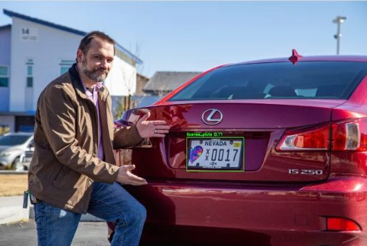
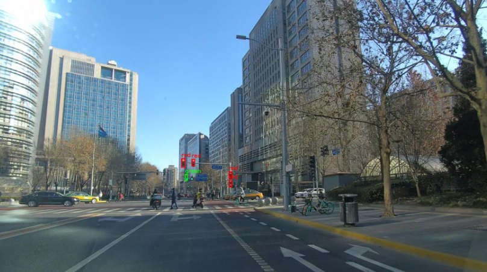

Challenge — make departmental payments easier to track for students and administrators.
Approach — a four-person team built student, administrator, and financial-officer portals with role-based access, an audit log, Paystack payments, and automated email receipts.

MACHINE LEARNING
License plate detector
Trained YOLOv8 on a Kaggle dataset and deployed image upload and live webcam detection in a Python web app.
Challenge — detect licence plates from an uploaded image or a live webcam feed.
Approach — trained YOLOv8 on a Kaggle dataset and packaged detection in a Python web app, with inference running in about half a second per image on a laptop.

COMPUTER VISION
Traffic scene detection
A computer-vision demo that detects and marks objects in street-scene images.
I’m a software developer with a broad technical toolkit and a simple goal: make useful things, and make them work well.
My work moves between full-stack web development, machine learning, IoT, and networking. I’m a First Class Information Technology graduate from the Federal University of Technology, Owerri, where I built projects with students and faculty and contributed to research across IoT and AI.
I’m open to developer, IoT, and ICT opportunities — and to thoughtful collaborations that have a real problem at their center.